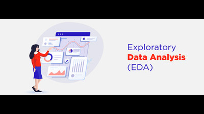

Exploratory Data Analysis (EDA) is an approach to analyzing datasets to summarize their main characteristics, often with visual methods. Here are the key steps typically involved in EDA: Understand the Dataset: Load the dataset and understand its structure (rows, columns, data types). Check for missing values and handle them appropriately. Summarize the Data: Use descriptive statistics (mean, median, mode, standard deviation, etc.) to get a basic understanding of the data. Generate summaries for both numerical and categorical data. Visualize the Data: Create various plots to visualize the distribution and relationships in the data. Common plots include: Histograms Box plots Bar charts Scatter plots Pair plots Use heatmaps to visualize correlations between features. Identify Patterns and Anomalies: Look for patterns, trends, and correlations in the data. Identify and investigate anomalies or outliers that might affect the analysis. Feature Engineering: Create new features from the existing data to help improve the performance of machine learning models. Transform and scale features as needed.
Read more...The objective of this project is to create a system that allows a user to control the mouse on their computer using hand gestures. This includes moving the cursor, clicking, scrolling, dragging, zooming, and other common actions performed with a mouse. The system uses a webcam to capture hand gestures and the Mediapipe library for hand landmark detection. Technology Used OpenCV contains techniques for processing images that detect objects. MediaPipe MediaPipe is a Google open-source framework that is applied in a machine learning pipeline. PyAutoGUI Allows users to imitate keyboard button pushes as well as mouse cursor movements and clicks. PyMath The Python math module gives you the possibility to perform common and useful mathematical operations within your program. Python will be used for implementing the core logic of the virtual mouse system, including image processing, gesture recognition, and real-time processing. Its extensive libraries and community support make it suitable for integrating different components of the system efficiently. Future Scope Advanced Gesture Recognition Techniques Enhanced User Interface and Interaction Accessibility and Customization Mobile and IoT Integration.
Read more...
Exploratory Data Analysis (EDA) is an approach to analyzing datasets to summarize their main characteristics, often with visual methods. Here are the key steps typically involved in EDA: Understand the Dataset: Load the dataset and understand its structure (rows, columns, data types). Check for missing values and handle them appropriately. Summarize the Data: Use descriptive statistics (mean, median, mode, standard deviation, etc.) to get a basic understanding of the data. Generate summaries for both numerical and categorical data. Visualize the Data:
View ProjectCloud computing is the on-demand delivery of IT resources over the internet with pay-as-you-go pricing. Instead of owning their own computing infrastructure or data centers, companies can rent access to anything from applications to storage from a cloud service provider like AWS. Amazon Web Services (AWS) is a comprehensive and widely adopted cloud platform, offering over 200 fully-featured services from data centers globally. AWS is used by millions of customers, including startups, large enterprises, and leading government agencies, to reduce costs, become more agile, and innovate faster.
View Project